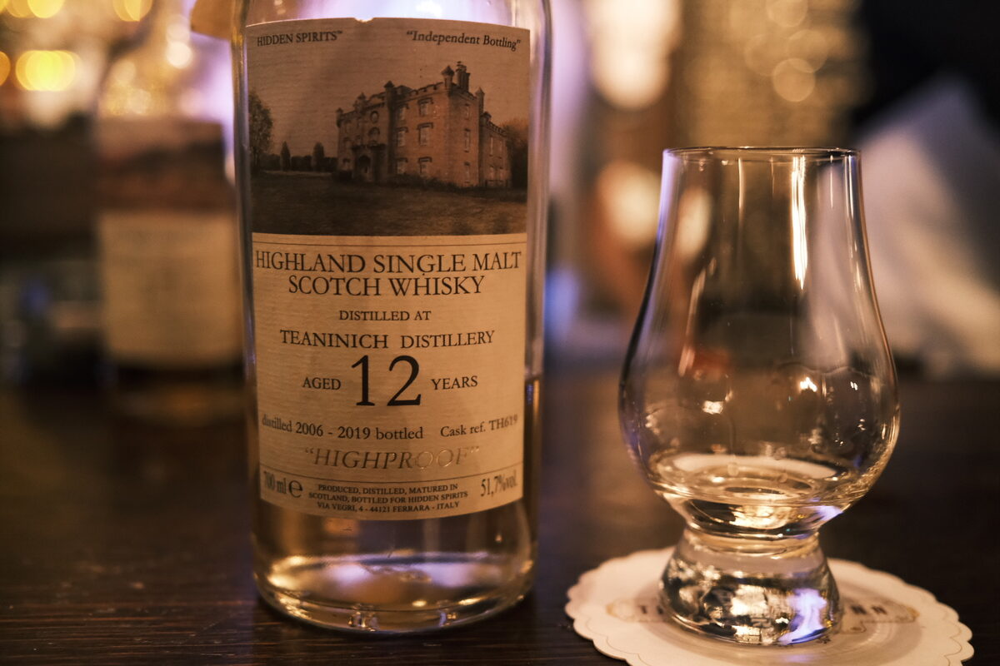

Teaninich 2006 Hidden Spirits 13 years 51.7% (exbourbon)
Another Hidden Spirit, this time from Teaninich. Not quite as obscure as Balmenach, but not exactly hyped… hope you like salad.
Colour Straw.
Nose Huge malt. big banana. Candlewax? Watermelon, rockmelon. Stone fruits. A bit of a fruit platter here. Cucumber and a bit of salt. A little meaty after some time. Very full. With a bit of water, reveals floral notes.
Palate Woah. Light Cucumber and caramel. Watermelon and salt. Fresh melons and lemonade icy-poles. Caramel and toffee, brown sugar. Malt, corn flakes. Cucumber again! What’s going on? With water, sweeter, sugar cookies.
Finish Perfumed. Dried fruits. Chai lattes and apples. Fresh salad (cucumber…). Very long, very pleasant.
Comments Haha, so weird. Cucumber and salad? Melons and meat? Typical fresh fruits and caramel? Wild stuff. 88/100.

Posted by Dominic on 02 May 2021